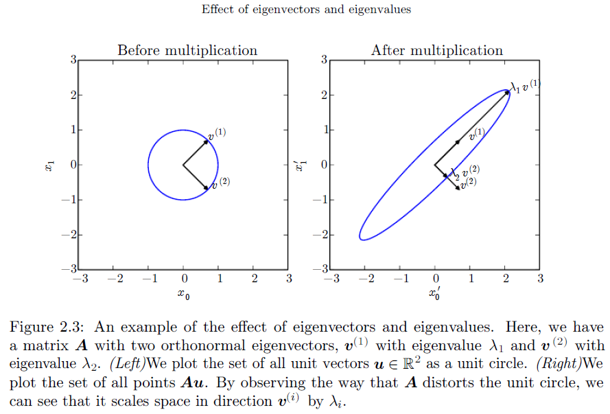

2. Linear Algebra
2.1 Scalars, Vectors, Matrices and Tensors
- Scalars：标量，就是一个数字
- Vectors：向量，默认是列向量
- Matrices：二维矩阵
- Tensors：张量（多于两个axes）
2.2 Multiplying Matrices and Vectors
矩阵
按位相乘（Element-wise product / Hadamard product）：$A \odot B$
矩阵乘法：$AB$
性质：
- $(AB)^T = B^T A^T$
向量的dot product
性质：
- $x^T y = y^T x$
2.3 Identity and Inverse Matrices
$ n \times n $ 的单位矩阵 $I_n$
逆矩阵 $A^{-1}$
2.4 Linear Dependence and Span
概念：
- 无解/一个解/无穷多解
- 线性组合
- 线性张成空间（span）
- 线性相关（linear dependence）/线性独立（linearly independent）
2.5 Norms
$ L^p $范数（$ p \ge 1 $）：（目标：Measure the size of a vector）
$ L^p $范数的特殊情形
$ L^2 $ norm： Euclidean norm, denoted as $ ||x|| $;
Squared $ L^2 $ norm can be calculated as $ x^T x $
$ L^1 $ norm
$ L^0 $ norm：非零元素的个数
Max norm：$||x||_{\infty} = \max \limits_{i} | x_{i} |$
Frobenius norm（目标：Measure the size of a matrix）：
Dot product and angle： $x^T y=||x||_2 ||y||_2 cos \theta$
2.6 Special Kinds of Matrices and Vectors
Diagonal matrix（对角阵）
只有主对角线上是非零元素（可以不是方阵）
性质：
- $diag(v)^{-1} = diag([1/v_1, … , 1/v_n]^T)$
Symmetric matrix（对称阵）
沿着对角线对称（$ A = A^T $）
Unit vector（$ ||x||_2 = 1 $）
Orthogonal matrix（正交矩阵，$ A^T A=A A^T = I $）
性质：
- 行/列向量都是标准正交的（Orthonormal, 模长为一、相互垂直）
- $ A^{-1} = A^T $
2.7 Eigendecomposition
特征值$ \lambda $和特征向量$ v $，基本性质：
类型：
对一个方阵$ A $的特征分解为：
其中矩阵$ V = [v^{(1)}, …, v^{(n)}]$ ，向量$ \lambda = [\lambda_1, …, \lambda_n]^T $
实对称矩阵$ A $的特征分解（eg: 二次型、Hessian阵）：
其中$ Q $是由特征向量组成的正交矩阵（具有性质：$ Q^{-1} = Q^T $）；$ \Lambda $是由特征值组成的对角阵（降序排列）
性质：
- 矩阵降秩$ \Leftrightarrow $ 至少其中一个特征值为零（因为$ det(A) = \prod \limits_{i} \lambda_i $）
- 正定：特征值都是正数；正定矩阵在二次型中的性质：$ \forall x, x^T A x \ge 0 $
- 对实对称矩阵$ A $，其特征向量矩阵$ Q $的第$ i $列记作向量$ d_i $（若特征值按降序排列那么特征矩阵也是唯一确定的），第$ i $大的特征值为$ \lambda_i $，则$ \lambda_i = d_i^T A d_i $（PCA分析要用到这条性质）
- 乘以矩阵$ A $之后，单位圆被缩放了：

2.8 Singular Value Decomposition
SVD分解（$A$的size: $ m \times n $）：
其中 $ U $（size: $ m \times m $） 和 $ V $（size: $ n \times n $）都是正交矩阵， $ D $（size: $ m \times n $）是对角阵。
且$ D $的组成元素是奇异值，$ U $的列向量是左奇异向量，$ V $的列向量是右奇异向量。性质：
- 实矩阵皆可SVD
- $ A $的左奇异向量等于$ A A^T $的特征向量
- $ A $的右奇异向量等于$ A^T A $的特征向量
- $ A $的非零奇异值等于$ A^T A $的特征值的平方根，对$ A A^T $而言同理
2.9 The Moore-Penrose Pseudoinverse
伪逆的定义式：
计算式（因为定义式往往不好计算）：
其中$ U $ 、 $ D $ 和 $ V $ 是矩阵$ A $ 的SVD分解。而$ D^+ $是通过对$ D $取元素的倒数、转置得到的。
性质（考察解方程$ Ax=y $）：
伪逆的用途：当方程严格求解不出来时，使用伪逆可以求得近似解。
当方程数不足时（行数少于列数），解应该有无穷多个。使用伪逆求得的唯一解$ x = A^+ y $自动满足性质：$ ||x||_2 $最小（类似于自动求得在L2正则情况下的最优解？）
- 当方程数很多时（行数多于列数），解可能不存在，对应于直线拟合。使用伪逆求得的唯一解$ x = A^+ y $自动满足性质：$ ||Ax-y||_2 $最小（类似于欧氏误差/回归误差最小？）
2.10 The Trace Operator
“迹”的定义：对角线元素的和
用Trace来简便表示：
- 表示Frobenius norm：$ ||A||_F = \sqrt{Tr(A A^T)} $
Trace的性质：
- $ Tr(A) = Tr(A^T) $
- 循环置换性：$ Tr(ABC) = Tr(CAB) = Tr(BCA) $，即可以把最后一个移到第一个（反之亦然），当两个矩阵时：$ Tr(AB) = Tr(BA) $
- 对标量$ a $：$ Tr(a) = a $
2.11 The Determinant
- 定义式：$ det(A) = \prod \limits_{i} v_i $，其中$ v_i $是第$ i $个特征值
- 性质：
- 行列式为零：降秩，奇异
- 行列式为一：正交矩阵行列式的绝对值必定为一
2.12 Example: Principal Components Analysis
Principal Components Analysis (PCA) 问题的数学描述（参考英文版花书的Page48）：
数据集：我们有m个点$ \{x^{(1)},…,x^{(m)}\} $，其中对任意一个点$ x^{(i)}\in \mathbb{R}^n $
目标：构造从$ x^{(i)} \in \mathbb{R}^n $到$ c^{(i)} \in \mathbb{R}^l $的映射$ f(x)=c $（此处$ l \leq n $），以及复原的映射$ x \approx g(c) $，使得复原的误差最小。从而获得编码向量$ c $
选取：复原映射是线性映射$ g(c)=Dc $，其中矩阵$ D $的列向量都是相互正交的，且模长为一（注意$ D $可以不是一个方阵）
求解：
- Step1：
对于一个点$ x $，以及已知的$ D $，求什么样的$ c $使得重建误差最小，相当于求$ c=f(x) $。通过化简以及通过对$c$求导，可以解得$ c = D^T x $，即$ f(x) = D^T x $
Step2：
那么完整的重建回来的值就是$ r(x) = D D^T x $。假设$ l=1 $（压缩到1维），那么$ D $就只是一个列向量$ d $，则优化问题就是（求$ d $）
我们用design matrix来表示样本，即$ X \in \mathbb{R}^{m \times n} $，矩阵的第$ i $行是第$ i $个样本$ x^{(i)T} $，那么上述问题则可以用矩阵范数表示成
注意到上述最大化问题形似特征值分解问题（$ \lambda_{1} = d_1^T A d_1 $），即求某一个特征向量，使得特征值最大。那么只需要对矩阵$ X^T X $作特征值分解，找到最大的特征值所对应的特征向量，即为所求的$ d $。
若$ l $为其他情形，类似地，取降序排列的前$ l $个特征值所对的特征向量（模长要为一）构造出矩阵$ D = (d_1, …, d_l) $即为所求的复原映射矩阵。
- Step1：